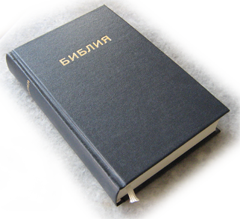

Библията, издание 1940 г.
Електронният вариант на текста на това широко познато издание, което и в днешни дни продължава да се печата и разпространява чрез съдействието на United Bible Societies, е набиран ръчно от Ваньо Георгиев и негови приятели.
За съжаление, еднозначно и точно възпроизвеждане с компютър на напечатания текст е невъзможно (поне с използваните тук средства). Ето защо, показваният от програмата "Компютърна Библия" текст не съвпада точно с текста "на хартия". Допуснати са следните промени:
Думите, в които има стари букви от българската азбука (тези букви без специални шрифтове не се възпроизвеждат от компютрите), са изписвани според съвременния правопис.
За улеснение на съвременния читател: навсякъде е премахнато нямото "ъ", а много от често употребяваните думи са изписвани според съвременния правопис (например: използвано е "сърце" вместо "сърдце", "стълб" вместо "стълп", и т.н.).
Все пак, за да не се отнеме от автентичното звучене на оригиналния текст, старите думи не са заменени със съвременни, запазени са падежните форми, препинателните знаци, главните и малки букви са поставени както в оригинала въпреки, че изглежда неправилно и странно според съвременните правила. Както са в оригиналното издание (само без старите букви и нямото "ъ") са изписани: личните имена и наименованията на растения и животни (например: "Иосиф" вместо "Йосиф"; "цаплята", "гйозум" и др.) и някои думи, които се срещат рядко в текста (например: "измислювам", "възлюблен", "земледелец" и др.). Думи които според съвременния правопис се пишат слято (или обратно - разделено) са изписани разделено (слято), както в оригинала. Отстранявани са само фрапиращи печатни грешки, които променят или затрудняват разбирането на смисъла и то само след сравняване с други преводи, издания и версии и установяване с пълна увереност, че се касае за такива. Всички, направени поправки са отбелязани с бележки под линия.